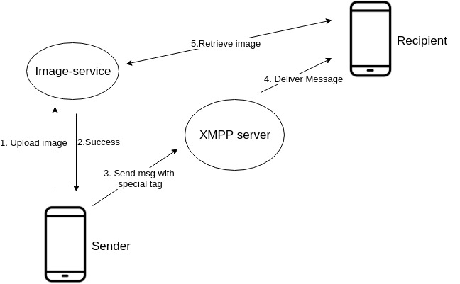

Tensorflow, Python, XMPP, Docker
I trained the chatbot following a Tutorial. The model(chatbot) is based off of 170 million Reddit comments that I pre-proccessed using Python and Sqlite. Training the model took 1 week with a GTX 1080ti. After training it, I put the model in a Tensorflow Docker container and used a python XMPP library to connect it to the messaging service I built.
When a message is passed in, the text is inputed into the chatbot which outputs 30 suggested replies. A python script built on top of Levenshtein is used to score the outputs and returns the output with the highest score.

I built an instant messaging service that enforces real-time data consistency across multiple devices. This project was built from scratch referencing various sources and documentation on the internet. Later on I dockertized the back-end of this project and integated it to a different project's back-end. Also, I integrated the front-end of this project to it.
Back-end: Node.js, MySql, XMPP(Ejabberd), Docker
Front-end: Android(Java), Sqlite, XMPP(Smack)
Using the Docker version of a XMPP framework Ejabberd I enabled the module "Message Archives" and connected it to a MySql database. Every time a message is passed in, before delivering it to the recipient, Ejabberd archives the message into the database. Whenever such event occurs a trigger enabled in the database updates the dialog list for the sender and recipient. Upon connecting to the server the client application pulls the user's dialog list and uses it to sync messages with the server.

I built an application such that when a client connects to the server the application pulls archive messages and cache it on their device. When a user accesses the dialog activity the cached dialog list which is pulled earlier, when the user started the application, is displayed. When the user accesses the message activity the application queries the server for archive messages and caches the retrieved messaged on their device. If messages of a conversation is already stored on the device the stored messages are displayed without requesting to the server. As a result, the load time decreases resulting in better user experience and less load on the server. When building this system I assumed that messages are static content.
Real time message syncing between devices logged in with the same user id. Enabled using Ejabberd's "Message Carbons" module server and the Smack libary on the application.
When sending a photo via messenger the user first uploads photos on the server which only the sender and recipient has permission to view. Afterwards, the user sends a message that has a special tag indicating that the message is a photo message. When the recipient receives the message the application parses it and displays a image.
Due to how Android handles services the connection with the server is terminated when the application is in the background. To handle this, I integrated push notifications to notify a user that they have a message when the user is disconnected from the server. However, there is a problem, how does the server know that the user is disconnected? The solution is Ejabberd offers a module called stream mangement which allows the server to detect when the user disconnects . If the recipient is offline the server makes a requests to firebase and sends a push notification.
Enabled using TLS 1.2 with a self-signed certificate. The application only trusts the server.